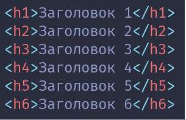
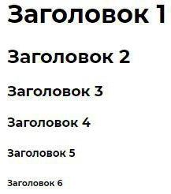

Начнём по порядку:
<!DOCTYPE> - тег, который определяет тип документа. Он необходим для того, чтобы браузер понимал, как интерпретировать текущую веб-страницу. Этот тег одиночный и указывается он всегда в самом начале HTML-документа.
· <html> - является главным тегом всей страницы, потому что включает в себя всё её содержимое. Пишется этот тег, как правило, сразу после <!DOCTYPE>. Тег <html> парный и закрывающий тег </html> ставится в самом конце HTML-документа.
· <head> - тег, который служит своего рода хранилищем для других head-элементов и помогает браузеру при работе с данными. Напрямую его содержимое не отображается на веб-странице. Этот тег и его содержимое очень важны для SEO-оптимизации. Внутри этого тега могут содержаться другие теги: <base>, <basefont>, <bgsound>, <link>, <meta>, <script>, <style>, <title>.
· <meta> - это один из тегов, который размещается внутри <head>. Он определяет метатеги, предназначенные для хранения информации для браузера и поисковой системы. Метаданные не отображаются на странице и используются для описания страницы, ключевых слов, автора документа.
· <title> - заголовок документа, который отображается не на странице, а во вкладке браузера. Это обязательный элемент HTML-документа, он может встречаться только один раз во всем документе и содержится внутри <head>.
· <body> - «Body» с английского означает «тело». И в HTML этот тег используется как раз в этом значении. То есть этот тег определяет всё тело документа, хранит весь его контент и отображает на странице. body> - парный тег, но использование закрывающего </body> не обязательно, хотя считается хорошим тоном.
Теги заголовков ©
Это элементы HTML-документа, которые имеют огромное значение. Они помогают упорядочить всю информацию, формируют структуру документа. В теги заголовков включаются 6 тегов различного уровня важности: <h1>, <h2>, <h3>, <h4>, <h5>, <h6>.
 Все теги заголовков являются парными и требуют обязательного использования закрывающих тегов.
Форматирование и работа с текстом ©
· <p> - текстовый абзац. Блочный парный тег, пишется всегда с новой строки.
· <br> - тег, используемый для разрыва строки в том месте, где он стоит.
· <blockquote> - текст, выделенный этим тегом, представляет собой отдельный выделенный блок с отступами. Как правило, используется для выделения длинных цитат в HTML-документе.
· <q> - тег, используемый для выделения кратких цитат в тексте. По умолчанию содержание тега заключается в кавычки.
· <b> - задаёт шрифту жирное начертание. Возможно использование вместе с другими тегами, задающими параметры тексту.
· <i> - курсивное написание содержащегося внутри текста.
· <small> - уменьшает шрифт на 1 единицу. Текст в HTML имеет размер от 1 до 7, по умолчанию шрифту задается размер 3. А с помощью тега <small> текст уменьшится до 2. Допускается неоднократное использование этого тега, но размером меньше 1 текст не может быть.
· <u> - тег, который делает шрифт подчеркнутым.
· <s> - зачеркнутый шрифт.
· <sub> - подстрочное написание шрифта.
· <sup> - надстрочное написание шрифта.
· <ol> - создание упорядоченного нумерованного списка. Элементы списка должны начинаться с тега <li>. Обязательно использование закрывающего тега.
· <ul> - тоже список, только маркированный. Требования к элементам и закрытию тега как и у <ol>.
· <a> - этот тег делает из текста гиперссылку. Обязательно использование закрывающего тега.
Встраиваемые элементы HTML ©
Добавлением и управлением аудиозаписей на веб-странице занимается тег <audio>. Путь к файлу прописывается через тег <source>. Это парный тег, который обязательно должен быть закрыт.
Суть добавления и управления видеозаписями такая же, как и с тегом <audio>. Только осуществляется это через тег <video>.
К аудио и видео в HTML можно добавлять субтитры с помощью тега <track>.
Для отображения изображений формата JPEG, PNG, GIF на веб-странице используется тег <img>.
На главную ===> Всё о CSS Единицы измерения в CSS Свойства Display